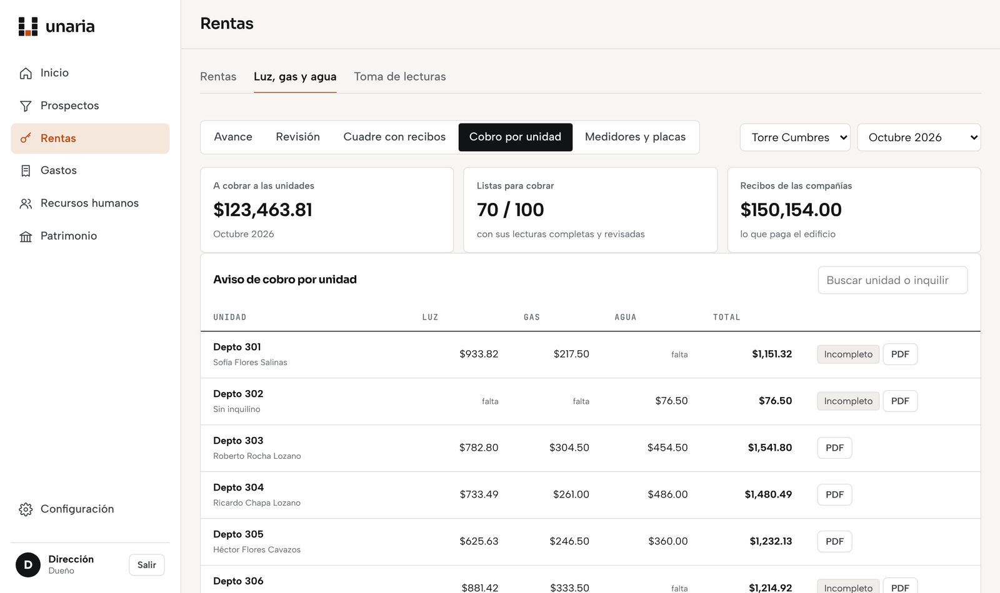

Sistemas a la medida para PyMEs
Captura una vez. Lo demás se actualiza solo.
Nos conectamos a lo que ya usas (ventas, facturación, los portales de tus clientes, Excel y WhatsApp) y lo juntamos en un sistema hecho a tu medida: todo tu negocio en un solo lugar, sin que dejes de usar lo que ya funciona.
El problema
Tu información vive en cinco lugares que no se hablan.
El sistema de ventas, el de facturación, el portal que te exige tu cliente, el Excel de siempre y el grupo de WhatsApp. Cada uno funciona solo, y alguien de tu equipo pasa horas copiando de uno a otro.
El mismo dato, tres veces
Se captura en ventas, otra vez en facturación y otra en el portal del cliente.
Errores y horas perdidas
Cada copia a mano es una oportunidad de equivocarse y un rato que no se usa en vender.
Nadie ve el negocio completo
La información está regada y el dueño decide con datos de la semana pasada.
“Ya tengo muchos portales. No quiero uno más.”
Tiene toda la razón. Por eso Unaria no es otro portal: nos conectamos a los que ya usas y los juntamos. No te pedimos que subas tu información otra vez ni que cambies cómo trabajas.
Cómo funciona
Tres pasos, empezando por lo que más te cuesta.
Entendemos tu operación
Vemos cómo trabajas hoy, qué sistemas usas y dónde se captura lo mismo dos o tres veces.
Conectamos lo que ya usas
Hacemos que tus sistemas se hablen entre sí. Lo que se captura en uno aparece solo en los demás.
Ves todo junto y medimos el ahorro
Una sola pantalla para operar y decidir, y cuentas claras de cuántas horas y errores te estás ahorrando.
Hecho a tu medida
Nos adaptamos a tu empresa. No tú a nosotros.
Tengas cero sistemas o cinco, todo encaja en uno. Cada proyecto se diseña según cómo ya trabaja tu equipo, sin importar a qué se dedique tu empresa.
Nos adaptamos a ti
No te pedimos que cambies tu forma de operar ni que dejes las herramientas que te funcionan.
Todo en un mismo lugar
Ventas, cobranza, facturas, inventario y reportes en una pantalla, conectada a lo que ya existe.
Capturar una vez
Nadie vuelve a pasar datos a mano de un sistema a otro.
Situaciones que resolvemos
¿Te suena alguna?
Pasa en negocios de todos los giros. Si te reconoces en alguna, platiquemos.
Edificio de departamentos · nuestro primer proyecto
Cobra agua, luz y gas a cada departamento con cuentas a mano.
Lectura de medidores con foto, cálculo automático por departamento y recibo enviado por WhatsApp o correo.
Comercio y distribución
Captura el pedido en un sistema y la factura en otro.
El pedido genera la factura sola, timbrada ante el SAT, y queda registrada para el contador.
Proveedor de grandes empresas
Su cliente lo obliga a usar su propio CRM.
Conectamos ese CRM con su sistema para que no capture dos veces.
Tienda en línea
Lleva pedidos, inventario y entregas por separado.
Los pedidos de la tienda alimentan inventario, entregas y reportes en un solo tablero.
Cualquier empresa
El dueño no sabe cuánto le deben ni cuánto vendió esta semana.
Un tablero con ventas, cobranza y pendientes, actualizado solo.
Empresas sin sistema
Todo vive en libretas, Excel y WhatsApp.
Empezamos desde ahí: ordenamos lo que ya tienen y lo pasamos a un sistema a su medida, paso a paso.

Con qué nos conectamos
Con lo que ya usas.
Si tu equipo ya lo usa todos los días, lo conectamos. No tienes que cambiarlo.
Cómo empezamos
Poco riesgo al principio. Resultados rápido.
No te pedimos un proyecto enorme de entrada. Empezamos por lo que más horas te ahorra y crecemos área por área.
Llamada
Sin costoEntendemos tu operación y dónde te duele. Sales sabiendo si podemos ayudarte.
Mapa de tu operación
Precio fijo, por escritoMapeamos tus sistemas, dónde capturas doble y cuánto te cuesta. Te llevas un mapa con números y prioridades.
Resultados rápido
Precio fijo, por escritoConstruimos primero lo que más horas te ahorra, para que veas resultados pronto.
Crece contigo
Mensualidad según lo conectadoSoporte, mejoras y nuevas conexiones, área por área.
Sin sorpresas: siempre sabes cuánto vas a pagar, por escrito, antes de empezar cada etapa.
Quiénes somos
Somos empresarios, no una agencia de software.
Operamos nuestras propias empresas. Antes de hacer sistemas para otros, los hicimos para resolver nuestro propio desorden de Excel, portales y WhatsApp. Por eso hablamos como cliente, no como proveedor de tecnología.

Director de una empresa industrial. Lleva el diagnóstico, el acompañamiento y la capacitación.

Dirige empresas de construcción e inversión inmobiliaria en Monterrey; diseñó el sistema con el que hoy las opera.
Preguntas frecuentes
Lo que nos preguntan antes de empezar.
¿Tengo que dejar mis sistemas?
No. Nos conectamos a los que ya usas y los juntamos en un solo lugar. Si alguno de verdad te estorba, te lo decimos, pero la decisión es tuya.
¿Y si no tengo ningún sistema?
También es para ti. Empezamos con lo que tengas (Excel, libretas, WhatsApp) y lo convertimos en un sistema a tu medida, sin que tengas que aprender algo complicado.
¿Mis datos son míos si dejo de trabajar con ustedes?
Sí. Tu información es tuya. Cada cliente tiene su propia base de datos, separada de las demás, y si un día decides irte te la entregamos completa en un formato que puedas abrir, como Excel.
¿Mis datos están seguros?
Cada persona de tu equipo entra con su propio usuario y ve solo lo que le toca. Tu base de datos no se comparte con ningún otro cliente.
¿Usan inteligencia artificial?
Sí, cuando ayuda: por ejemplo, para leer facturas o documentos, ordenar información o automatizar tareas repetitivas. Pero no te vendemos inteligencia artificial; te vendemos menos trabajo repetido y la información junta.
¿Qué pasa si mi sistema actual cambia?
Ajustamos la conexión. Para eso es la mensualidad: soporte, mejoras y cambios conforme tu empresa y tus herramientas cambian.
¿Cuánto tarda?
Depende de lo que encontremos en el diagnóstico. Empezamos por una sola conexión para que veas resultados pronto, y la fecha de entrega te la damos por escrito antes de empezar.
¿Cuánto cuesta?
La llamada de 30 minutos no tiene costo. El diagnóstico y la primera conexión tienen precio fijo, que te damos por escrito antes de empezar, según el tamaño de tu operación.
¿Sirve para mi industria?
Sí. No trabajamos para un solo giro: diseñamos cada sistema según cómo opera tu empresa, sea comercio, servicios, manufactura, construcción o cualquier otra.
Todo encaja.
Platiquemos 30 minutos sobre tu operación.
Sin compromiso. Te decimos dónde se te van las horas y si podemos ayudarte.